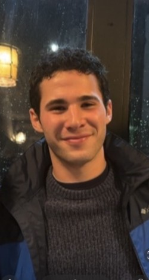

I was born in White Plains, NY, into a tight-knit Sicilian-American family. I have two older brothers, Giuseppe (26) and Andrea (25), and a dog, Ozzie. Much of my extended family, cousins, grandparents, and all, has remained rooted in Whitestone, Queens. My mother grew up there, in a neighborhood shaped by a large Sicilian community that gathered around a social club similar to the ones back in Sicily. In many ways, it felt like an entire town had simply picked up and crossed an ocean, not without hardship and adaptation, of course, but with a remarkable sense of continuity and identity.
My father comes from the same Sicilian roots, though his family chose a different path, moving out of the Bronx in search of more space, eventually settling in Harrison, then Yonkers. That's where my parents decided to raise my brothers and me. We were later enrolled in private Catholic schools in Westchester county, as my parents were drawn to the values and discipline those institutions instilled.
At 18, I was admitted to Northeastern University through the N.U.in program and spent four transformative months living in Bilbao, Spain, studying at the University of Deusto. It was my first real taste of independence and the world beyond what I knew. From there, I came to Boston, where I've spent the last three and a half years completing two co-ops, taking classes through the summers, and growing in ways I couldn't have anticipated.
As I approach graduation, I feel a deep gratitude for everything Northeastern has given me, the platform, the people, and the permission to explore who I am. I'd love to share more about that journey and the lessons I'm carrying forward.